AFOSR COE CODAC
From Local to Global
Sheaf-Theoretic Control Barrier Functions on Manifolds
Keith A. Currier
University of Florida · with Wilmer Leal, Brandon C. Fallin, James Fairbanks, and Warren E. Dixon
CODAC Kickoff Meeting · Arlington, VA · September 2026

Sheaf Theory
A sheaf assigns data to local regions and encodes compatibility on overlaps.
Video: DigitalMontageSongs
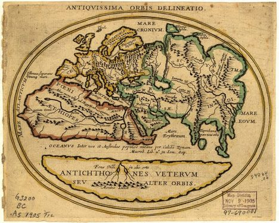
Library of Congress, Geography and Map Division
\(U_\alpha\)
\(U_\beta\)
\(U_\gamma\)
\(U_\alpha\)
\(U_\beta\)
\(U_\gamma\)
Agreement of local data on overlapping regions provides valid conditions to glue into some global structure.
Goal: controllers are the local objects we want to compose into a safe global feedback law.
2
Control Barrier Functions (CBFs)
System dynamics
\[ \dot{x} = f(x) + g(x)u \]
Safe set construction
\[ \mathcal{S} = \{x \in \mathbb{R}^{n} : B(x) \leq 0\} \]
with the CBF candidate \(B(x) = [B_{1}(x), \ldots, B_{v}(x)]\), \(B: \mathbb{R}^{n} \to \mathbb{R}^{v}\).
Forward invariance under the closed-loop dynamics
\[ \dot{x} = f_{\mathrm{cl}}(x) = f(x)+g(x)\kappa(x) \]
\[ x(t_0)\in\mathcal{S} \implies x(t)\in \mathcal{S}\quad \forall t\geq t_0 \]
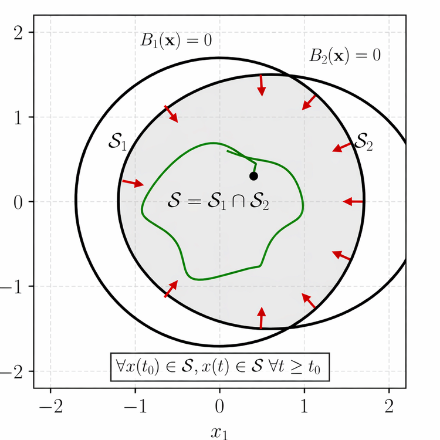
[1] A. Isaly, M. Mamaghani, R. G. Sanfelice, and W. E. Dixon. IEEE Transactions on Automatic Control, 69(11):7326–7339, 2024
3
Vector-Valued CBFs
Set of admissible safe control inputs
\[ K_{\mathrm{CBF}}(x) \triangleq \{u \in \mathbb{R}^m : \nabla B(x)^{\top}[f(x) + g(x)u] \leq -\gamma(x)\} \]
QP step:
\[ \begin{aligned}
\kappa^*(x) = {} & \operatorname*{arg\,min}_{u\in \mathbb{R}^{m}}\; \|u-u_{\mathrm{nom}}\|^2 \\
\text{s.t. } & \nabla B(x)^{\top}[f(x) + g(x)u] \leq -\gamma(x)
\end{aligned} \]
\[ \kappa(x) \in K_{\mathrm{CBF}}(x) \]
Single-valued and continuous
\[ \begin{aligned}
B_1(x,y) &= x - d \\
B_2(x,y) &= \tfrac{1}{\sqrt{2}}\,x + \tfrac{1}{\sqrt{2}}\,y - d \\
B_3(x,y) &= y - d \\
B_4(x,y) &= -\tfrac{1}{\sqrt{2}}\,x + \tfrac{1}{\sqrt{2}}\,y - d \\
B_5(x,y) &= -x - d \\
B_6(x,y) &= -\tfrac{1}{\sqrt{2}}\,x - \tfrac{1}{\sqrt{2}}\,y - d \\
B_7(x,y) &= -y - d \\
B_8(x,y) &= \tfrac{1}{\sqrt{2}}\,x - \tfrac{1}{\sqrt{2}}\,y - d
\end{aligned} \]
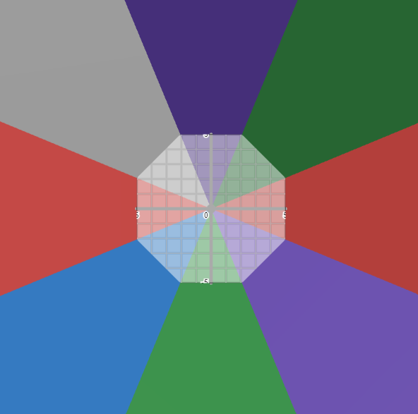
Eight affine barrier functions \(B_1, \ldots, B_8\); their zero sublevel sets meet in an octagonal safe set.
4
Differential Inclusion Motivation
Hybrid CBF
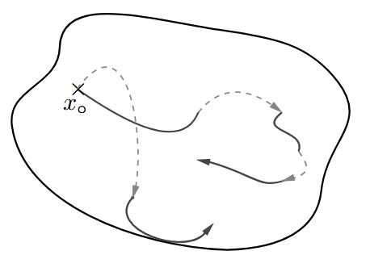
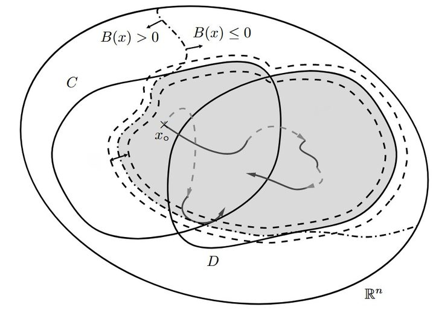
\(\mathcal{S}\)\[ \mathcal{H} : \begin{cases} \dot{x} \in F_P(x, u_C) & (x, u_C) \in C_P \\ x^+ \in G_P(x, u_D) & (x, u_D) \in D_P \end{cases} \]
\[ F_P : \mathbb{R}^n \times \mathbb{R}^{m} \rightrightarrows \mathbb{R}^n, \quad (x, u_C) \in C_P \subset \mathbb{R}^n \times \mathbb{R}^{m} \]
[2] C. Gonzalez, H. Sweatland, K. Currier, W. E. Dixon, and R. Sanfelice. IEEE Conference on Decision and Control, pp. 5654–5659, 2025 · [3]
5
Differential Inclusion Motivation
What is a geometric representation of the flow map and flow set?
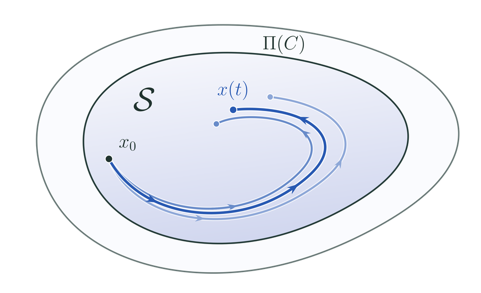
\(\mathcal{S}\)\[ \dot{x} \in F_P(x, u_C) \qquad (x, u_C) \in C_P \]
\[ F_P : \textcolor{#C62828}{\underline{\textcolor{#002A54}{\mathbb{R}^n \times \mathbb{R}^{m}}}} \rightrightarrows \mathbb{R}^n, \quad (x, u_C) \in C_P \subset \textcolor{#C62828}{\underline{\textcolor{#002A54}{\mathbb{R}^n \times \mathbb{R}^{m}}}} \]
\[ \Pi(C_P)\triangleq \{x\in\mathbb{R}^n\mid \exists\, u_C\in \mathbb{R}^m\ \text{s.t.}\ (x,u_C)\in C_P\} \]
\(S^1 \times \mathbb{R}\)
\(\pi\)
\(S^1\)
Product bundle
Modeling constrained controlled differential inclusions as vector bundles
[2] C. Gonzalez, H. Sweatland, K. Currier, W. E. Dixon, and R. Sanfelice. IEEE Conference on Decision and Control, pp. 5654–5659, 2025 · [3]
6
Velocity Formalized
\(T_x\mathcal{M} \cong \mathbb{R}^n\)
\((x,v)= v_x\)
\(x\)
\(\mathcal{M}\)
\(\pi_{T\mathcal{M}}: T\mathcal{M} \to \mathcal{M}\)
\(\pi_{T\mathcal{M}}\)
\((x,v) \mapsto x\)
\(x\)
\(\mathcal{M}\)
\(T\mathcal{M}\)
\(v_x\)
\(\pi_{T\mathcal{M}}\)
\(x\)
\(\mathcal{M}\)
Tangent bundle
7
Control Formalized
\(\mathcal{U}_x \cong \mathbb{R}^m\)
\((x,u)= u_x\)
\(x\)
\(\mathcal{M}\)
\(\pi_{\mathcal{U}}: \mathcal{U} \to \mathcal{M}\)
\(\pi_{\mathcal{U}}\)
\((x,u) \mapsto x\)
\(x\)
\(\mathcal{M}\)
\(\mathcal{M} = \mathbb{R}^n, \text{ giving the bundle } (\mathbb{R}^n \times \mathbb{R}^m, \mathrm{pr}_1, \mathbb{R}^n) \cong (\mathcal{U}, \pi, \mathcal{M})\)
\(\mathcal{U}\)
\(u_x\)
\(\pi\)
\(x\)
\(\mathcal{M}\)
Control bundle
8
Dynamics Formalized
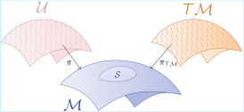
\(\Phi : \mathcal{U} \to T\mathcal{M}\) \(\dot{x} = \Phi(x,u)= f(x) + g(x)u\) \(\kappa(x)\) \(\Phi_{\mathrm{cl}}(x, \kappa(x))= f(x) + g(x)\kappa(x)\)\(\kappa(x) \in K_{\mathrm{CBF}}(x)\)
Nonlinear control system
Now, what about set-valued maps and differential inclusions?
[4] M. de Sa, P. Ong, and A. D. Ames. arXiv:2510.20202, 2025 · [5]
9
Differential Inclusions Formalized
\(\Phi : \mathcal{U} \rightrightarrows T\mathcal{M}\)
\(\dot{x} \in \Phi(u_x)\)
\(C_u\)
\(\kappa(x) \in K_{\mathrm{CBF}}(x)\)
\(\dot{x} \in \Phi_{\mathrm{cl}}(\kappa(x))\)
\(\Pi(C_u)\)
Constrained control differential inclusion
\[ F(x) + G_x u_x \triangleq \{v_x + G_x u_x \mid v_x \in F(x) \} \]
\[ \begin{aligned}\Pi(C_u) \triangleq \{ x\in\mathcal{M}\mid {} & \exists\, u_x\in \mathcal{U}_x \\ & \text{with } u_x\in C_u \}\end{aligned} \]
Why use fiber bundles / vector bundles?
- Feedback laws are sections of the control bundle.
- Sections are local objects/data.
- Local feedback laws form a sheaf under restriction and gluing.
- If compatible, local feedback laws can be glued into a unique global feedback law.
10
Feedback Laws are Sections
\(\mathcal{U}\)
\(C_u\)
\(\kappa(x)\)
\(\pi\)
\(\Pi(C_u)\)
\(\mathcal{M}\)
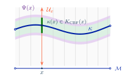
\(\mathcal{U}\)
\(\pi\)
Set of admissible inputs for \(x \in \Pi(C_u)\):
\(\Psi(x) \triangleq \{ u_x\in C_u \mid u_x\in \mathcal{U}_x\}=C_u\cap \mathcal{U}_x\)
Set of safe admissible inputs:
\(K_{\mathrm{CBF}}(x) \triangleq \{\, u_x \in \Psi(x) : \Upsilon(u_x) \le -\gamma(x) \,\}\)
\(\displaystyle \Upsilon_{i}(u_x) \triangleq \sup_{\dot{x}\in\Phi(u_{x})}\left\langle d B_{i}(x),\dot{x}\right\rangle\)
Getting the global section → compatibility of local feedback laws
11
Sheaf Compatibility Conditions
A local feedback law over an open set \(U \subseteq \mathcal{M}\) is a section of the control bundle. Given a rank-\(m\) vector bundle \((\mathcal{U},\pi,\mathcal{M})\), the map \(\kappa\colon \mathcal{M}\to\mathcal{U}\) is a section that admits a space of local sections \(\kappa \in \Gamma(U,\mathcal{U}) = \{\kappa\colon U \to \mathcal{U}|_U \mid \pi\circ\kappa = \mathrm{id}_U\}\).
\(\mathcal{U}|_U\)
\(\kappa(x)\)
\(\pi\)
\(U\)
Presheaf:
\(\mathcal{F}(U)\triangleq\{\kappa\in\Gamma(U,\mathcal{U})\mid\kappa\text{ is continuous}\}\)
\(\mathcal{F}:\mathcal{O}(\mathcal{M})^{\mathrm{op}}\to \mathbf{Set}, \qquad U \mapsto \mathcal{F}(U)\)
To establish \(\mathcal{F}\) is a sheaf: for an open cover \(U=\bigcup_\alpha U_\alpha\),
Locality.
\(\kappa,\widetilde{\kappa}\in\mathcal F(U)\)
\[ \begin{gathered}\kappa|_{U_\alpha}=\widetilde{\kappa}|_{U_\alpha} \quad\forall\alpha \\ \Longrightarrow\quad\kappa=\widetilde{\kappa}\end{gathered} \]
Gluing.
\(\kappa_\alpha\in\mathcal F(U_\alpha)\)
\[ \begin{gathered}\kappa_\alpha|_{U_\alpha\cap U_\beta} =\kappa_\beta|_{U_\alpha\cap U_\beta} \quad\forall\alpha,\beta \\ \Longrightarrow\quad\exists!\,\kappa\in\mathcal F(U) \\ \text{such that }\kappa|_{U_\alpha}=\kappa_\alpha \quad\forall\alpha\end{gathered} \]
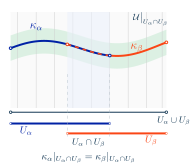
\(\mathcal{K}_{\mathrm{CBF}}(U) \triangleq \{\kappa \in \mathcal{F}(U) \mid \colorbox{#F4CCC8}{$\kappa(x) \in K_{\mathrm{CBF}}(x)$}\;\; \forall\, x \in U\}\)
➔
\(\kappa \in \mathcal{K}_{\mathrm{CBF}}(U)\)
Can pointwise-optimal local controllers glue? → Fiberwise regularity
12
Local Sections and Local Trivializations
Local trivialization: not assuming a globally trivial bundle (\(\mathcal{M} = U\)).
A chart on a manifold \(\mathcal{M}\) is a pair \((U, \phi)\), where \(U\) is the coordinate domain, an open subset of \(\mathcal{M}\), and \(\phi\) is a coordinate map. Regularity must be verified chart by chart.
A chart on a manifold \(\mathcal{M}\) is a pair \((U, \phi)\), where \(U\) is the coordinate domain, an open subset of \(\mathcal{M}\), and \(\phi\) is a coordinate map. Regularity must be verified chart by chart.
\(\mathcal{U}\)
\((C_u)_\alpha\)
\(\kappa_\alpha(x)\)
\(\pi\)
\(U_\alpha\)
\(\Pi(C_u)_\alpha\)
\(\mathcal{M}\)
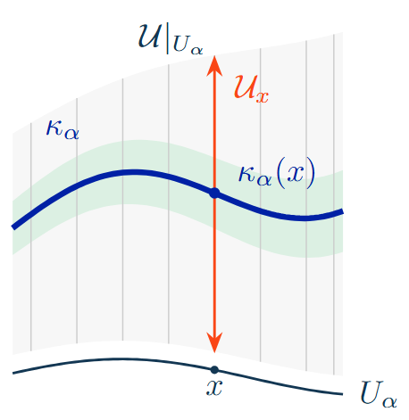
\(\phi_{\alpha}\)
\(\phi_{\alpha}^{-1}\)
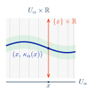
\(\mathrm{pr}_2\)
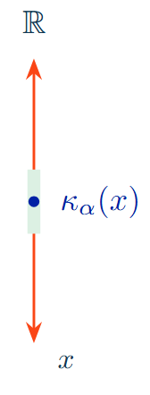
\[ \Pi(C_u)_\alpha \;\begin{array}{c} \xleftarrow{\quad\pi\quad} \\[-4pt] \xrightarrow{\quad\kappa\quad} \\[-4pt] \underset{K_{\mathrm{CBF}}}{\rightrightarrows} \end{array}\; \mathcal{U}|_{U_\alpha} \;\xrightleftharpoons[\;\phi_\alpha^{-1}\;]{\;\phi_\alpha\;}\; U_\alpha \times \mathbb{R}^m \xrightarrow{\;\mathrm{pr}_2\;} \mathbb{R}^m \]
13
Local-to-Global Sheaf Construction
Local regularity properties
Fiberwise regularity
Sheaf compatibility
\(\phi_{\alpha}\)
\(\phi_{\alpha}^{-1}\)
Convexity, continuity, local boundedness, closedness, etc.
\[ \kappa_\alpha(x) \in K_{\mathrm{CBF},\alpha}(x) \]
➔
Fiberwise convexity, continuity, precompactness
\[ \kappa(x) \in K_{\mathrm{CBF}}(x) \]
➔
Compatibility:
\(\kappa_\alpha\big|_{U_{\alpha} \cap U_\beta} = \kappa_\beta\big|_{U_{\alpha} \cap U_\beta}\)
\(\kappa_\alpha(x) = g_{\alpha\beta}(x)\kappa_\beta(x)\)
\(g_{\alpha\beta}: U_\alpha\cap U_\beta\to \mathrm{GL}(n,\mathbb{R})\)
\(\kappa_\alpha(x) = g_{\alpha\beta}(x)\kappa_\beta(x)\)
\(g_{\alpha\beta}: U_\alpha\cap U_\beta\to \mathrm{GL}(n,\mathbb{R})\)
\(\mathcal{K}_{\mathrm{CBF}}(U) \triangleq \{\kappa \in \mathcal{F}(U) \mid \colorbox{#F4CCC8}{$\kappa(x) \in K_{\mathrm{CBF}}(x)$}\;\; \forall\, x \in U\}\)
➔
\(\kappa \in \mathcal{K}_{\mathrm{CBF}}(\Pi(C_u))\) ✔
\(\kappa\) is the unique global section and \(\mathcal{S}\) is forward invariant
14
Simulation: Möbius Strip
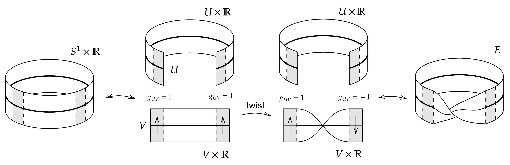
Standard nontrivial manifold.
15
Simulation: Möbius Strip
Charts and transition
\[ \begin{gathered}U_\alpha\triangleq S^1\setminus \{ \theta=\pi \}, \qquad U_\beta\triangleq S^1\setminus \{ \theta = 0 \} \\ g_{\alpha\beta}\triangleq\mathtt{diag}\{1,-1\}\end{gathered} \]
State and reference
\[ \begin{gathered}\theta\in S^1, \quad \ell\in\mathbb{R} \\ \theta_d (t)\triangleq \mathtt{mod} (10t,2\pi) \\ \ell_d(t)\triangleq 0.95\cos (0.325t - 2\pi)\end{gathered} \]
Tracking errors and nominal control
\[ \begin{gathered}e_\theta\triangleq \mathtt{atan2}(\sin(\theta-\theta_d),\cos(\theta-\theta_d)) \\ e_{\ell}\triangleq \ell - \ell_d \\ u_{\mathrm{nom}}=[-10 e_\theta + \dot{\theta}_d ,\, -10e_\ell + \dot{\ell}_d ]^\top\end{gathered} \]
Barrier functions in each chart
\[ \begin{gathered}B^c(x)\triangleq \big[\cos(\tfrac{2\pi}{3})-\cos (\theta)-\ell, \\ \ell -0.65,\; -\ell-0.2\big]^\top, \quad c\in\{ \alpha,\beta\}\end{gathered} \]
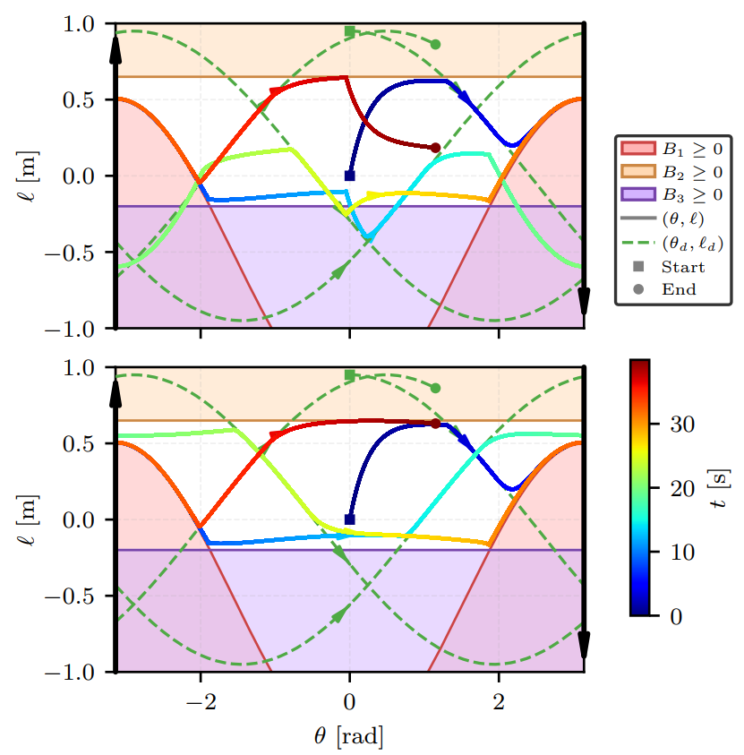
16
Future Work
\(x(t)\)
\(x(0)\)
\(\mathrm{dom}(x)\)
\(t\)
\(\mathcal{S}\)
“compact hybrid
time domain” \(x(t,j)\) \(t\) \(j\) 1 2 3
time domain” \(x(t,j)\) \(t\) \(j\) 1 2 3
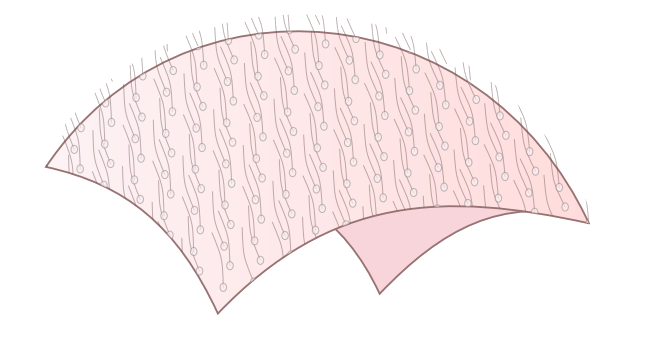
\(\mathcal{U}_C\) \(\mathcal{M}\)
\(\mathcal{M}\)
\(\mathcal{M}_3\)
\(\mathcal{M}_2\)
\(\mathcal{M}_1\)
\(\mathcal{M}_0\)
\(\mathcal{U}_C \oplus \mathcal{U}_D\)
Extend to hybrid systems using Whitney sums & pullbacks over bundles
17
Conclusion
Core result
Compatible continuous local CBF controllers determine a unique global feedback law on an admissible domain.
Broader opportunity
A common language for local models and their compatibility, within control and beyond.
Compatibility matters on trivial and nontrivial bundles.
Current work
- Develop computational synthesis and overlap consistency checks.
- Connect continuous and discrete CBF constructions.
- Evaluate computational performance and robotic implementations.
Next: take the local-to-global math framework to metriplectic dynamics and the HJB equation.
[6] K. A. Currier, W. Leal, B. C. Fallin, J. Fairbanks, and W. E. Dixon. IEEE Conference on Decision and Control, 2026, to appear
18
Thank you!
19
References
- [1]A. Isaly, M. Mamaghani, R. G. Sanfelice, and W. E. Dixon. On the feasibility and continuity of feedback controllers defined by multiple control barrier functions. IEEE Transactions on Automatic Control, 69(11):7326–7339, 2024.
- [2]C. Gonzalez, H. Sweatland, K. Currier, W. E. Dixon, and R. Sanfelice. Pointwise optimal feedback laws for hybrid inclusions using multiple control barrier functions. IEEE Conference on Decision and Control, pp. 5654–5659, 2025.
- [3]R. G. Sanfelice. Hybrid Feedback Control. Princeton University Press, 2021.
- [4]M. de Sa, P. Ong, and A. D. Ames. From bundles to backstepping: geometric control barrier functions for safety-critical control on manifolds. arXiv:2510.20202, 2025.
- [5]P. Tabuada and G. J. Pappas. Quotients of fully nonlinear control systems. SIAM Journal on Control and Optimization, 43(5):1844–1866, 2005.
- [6]K. A. Currier, W. Leal, B. C. Fallin, J. Fairbanks, and W. E. Dixon. From local to global: sheaf-theoretic control barrier functions on manifolds. IEEE Conference on Decision and Control, 2026, to appear.
20